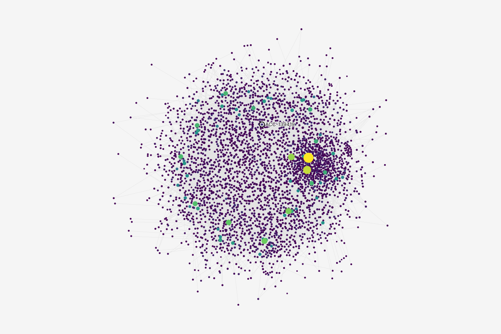
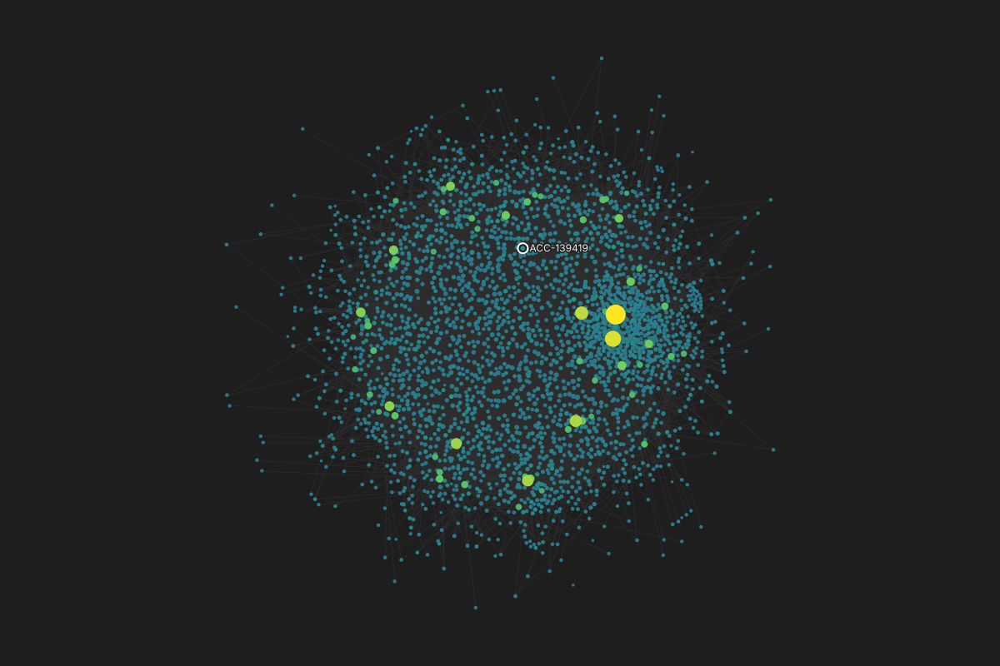

PageRank log scale
1.63e-46.90e-2
NodesEdges
TableScatter
Export table...
April data, full graph: 3,093 accounts. Rank on PageRank against rank on betweenness. Rank 1 is the top.
Agreement
0 of the top 50 in both
The rankings disagree at the top.
Top5102050100
At the other lengths: 0 of 5, 0 of 10, 0 of 20, 18 of 100.
Spearman 0.40, leaving out the 1,153 accounts tied at the bottom of both (0.78 with them)
Same rank on both. Above the line, ranked higher by betweenness; below it, ranked higher by PageRank
A tie over 10% of a side, drawn as one band; its accounts sit on the band's middle line
ACC-139419 selected: #76 on PageRank, #1 on betweenness
Not plotted: the 1,153 tied at the bottom of both, in the bottom-right corner. All 3,093 accounts are on both sides